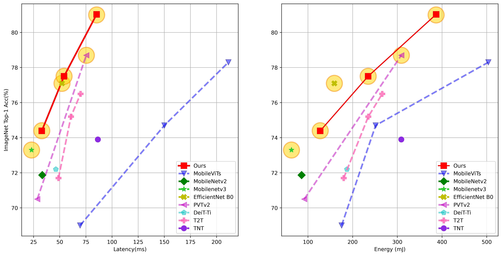
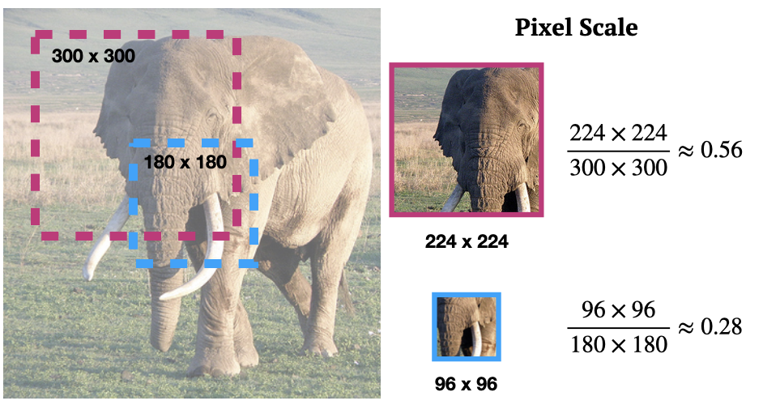
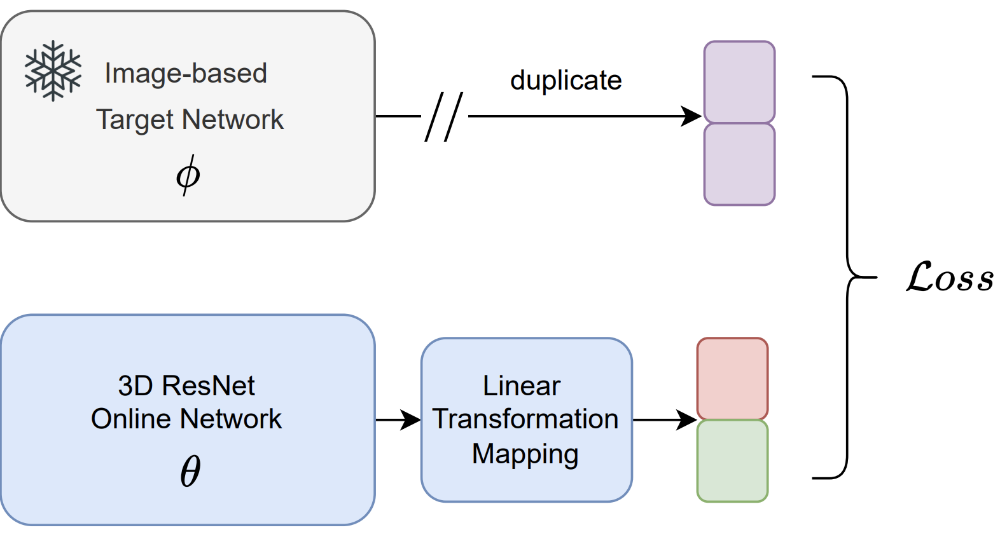
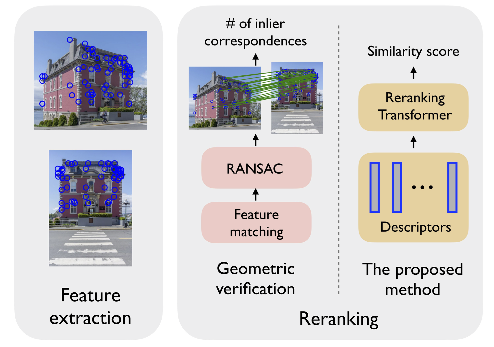
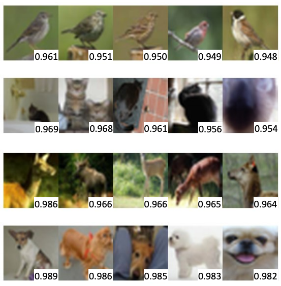
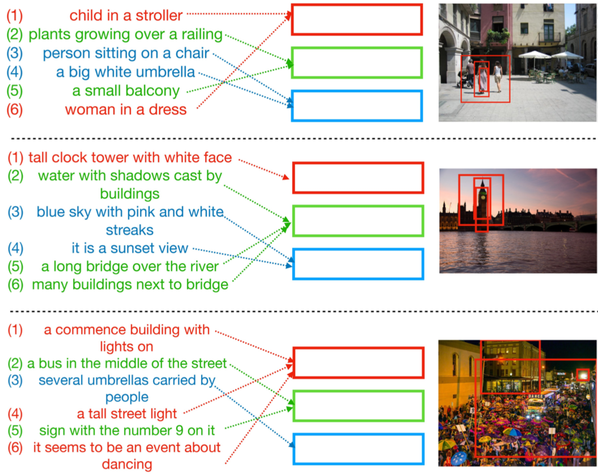
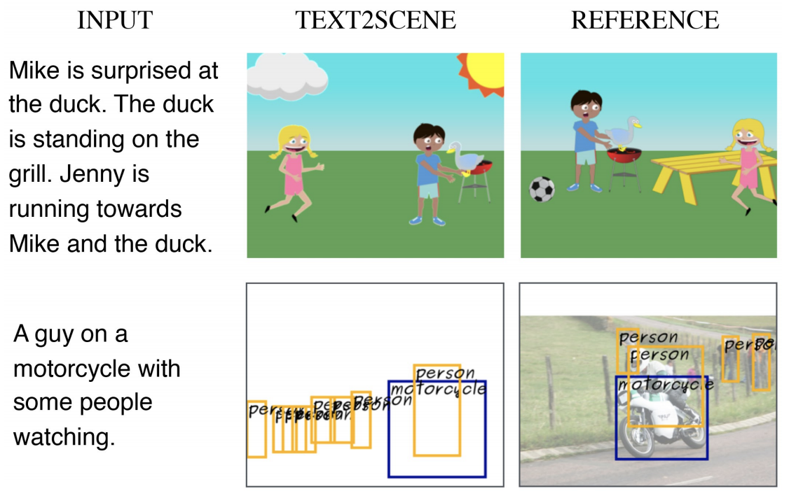

Progressive Mixed-Precision Decoding for Efficient LLM Inference
Hao Mark Chen, Fuwen Tan, Alexandros Kouris, Royson Lee, Hongxiang Fan, Stylianos I. Venieris
I work on making image/video generation models and large language models faster, with recent work on acceleration, quantization, and efficient inference. I am a main developer of MAI-Image-2.5-Flash, an efficiency-optimized variant of MAI-Image-2.5, and received a Best Paper Finalist at CVPR 2019.

Hao Mark Chen, Fuwen Tan, Alexandros Kouris, Royson Lee, Hongxiang Fan, Stylianos I. Venieris

Fuwen Tan, Royson Lee, Lukasz Dudziak, Shell Xu Hu, Sourav Bhattacharya, Timothy Hospedales, Georgios Tzimiropoulos, Brais Martinez

Fatemeh Saleh, Fuwen Tan, Adrian Bulat, Georgios Tzimiropoulos, Brais Martinez
Junting Pan, Adrian Bulat, Fuwen Tan, Xiatian Zhu, Lukasz Dudziak, Hongsheng Li, Georgios Tzimiropoulos, Brais Martinez



Fuwen Tan, Paola Cascante-Bonilla, Xiaoxiao Guo, Hui Wu, Song Feng, Vicente Ordonez

Fuwen Tan, Song Feng, Vicente Ordonez
Best Paper Finalist
Fuwen Tan, Crispin Bernier, Benjamin Cohen, Vicente Ordonez, Connelly Barnes
Fuwen Tan, Chi-Wing Fu, Teng Deng, Jianfei Cai, Tat Jen Cham
Mengyao Zhao, Fuwen Tan, Chi-Wing Fu, Chi-Keung Tang, Jianfei Cai, Tat Jen Cham
Images and text exhibit hierarchical structures: scenes are built from objects, sentences from words. This thesis develops techniques for learning local representations of images and text, with applications in visual recognition, retrieval, and synthesis.